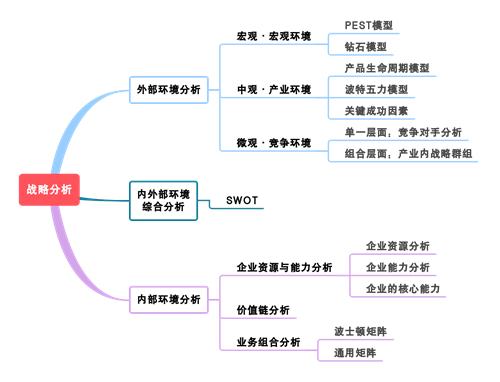
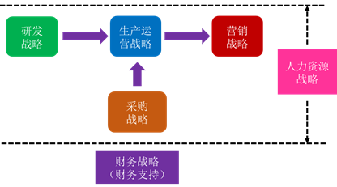

公司战略与风险管理
第一章 战略与战略管理
战略变革的类型
(1)产品和服务变革
(2)人员变革
(3)技术变革
(4)结构和体系变革
战略变革的主要任务
调整企业理念
企业战略重新定位
重新设计企业组织结构
第二章 战略分析
结构解析
内部环境分析
-
企业资源与能力分析企业资源分析
主要类型：有形资源、无形资源、人力资源
判断标准：稀缺性、持久性、不可替代性、不可模仿性
企业能力分析研发、生产管理、营销、财务、组织管理
核心能力核心能力的评价：（1）自我评价 （2）内部比较 （3）基准分析
基准分析包括：内部基准、竞争性基准、过程或活动基准（不同行业）、一般基准（同一行业）
-
价值链分析价值链分析
点：确认那些支持企业竞争优势的关键性活动。
线：明确价值链内各种活动之间的联系。
链：明确价值系统内各项价值活动之间的联系。基本活动 支持活动 内部后勤（原材料供应） 采购管理 生产经营（生产加工） 技术开发 外部后勤（成品储运） 人力资源管理 市场销售 基础设施 服务（售后服务） -
业务组合分析
战略群组分析意义：
了解竞争状况->竞争着眼点->了解移动障碍->发现战略机会
第三章 战略选择
结构解析


总体战略
发展战略
-
一体化战略实施条件：成本高且可靠性差、增长潜力大、具备资金资源、利润较高、（供应较少而竞争多、价格稳定十分重要）
-
密集型战略
-
多元化战略实施原因：玩不转->钱太多->更有利
1. 现有产品或市场中持续经营不能达到目标；
优点：
2. 现有资金超过财务扩展所需要的资金；
3. 与现有产品市场相比，多元化有更高的利润。(1)分散风险
风险：
(2)找到新的增长点
(3)利用未充分利用的资源
(4)运用盈余资金
(5)运用企业声誉进入另一个产业
(6)更容易获得融资
(7)获得资金或其他财务利益原有产业的风险、产业进入的风险、产业退出的风险、内部整合的风险、市场整体的风险。
发展战略的途径
-
外部发展-并购并购失败的原因
决策不当（事前，买错了）
并购的动机
跨国并购面临政治风险（事中，遇险了）
支付过高费用（事中，买贵了）
不能进行很好的整合（事后，整合差）
减少竞争、避开壁垒、获得协同效应
-
内部发展-新建
-
战略联盟主要类型：
合资企业、互相持股投资(股权式)：灵活性差、控制能力好、信任和稳定性强；
主要动因
功能性协议(契约式)：更灵活、更默契、控制力差、信任和稳定性差。（1）促进技术创新 （4）实现资源互补 （2）避免经营风险 （5）开拓新的市场 （3）避免或减少竞争 （6）减低协调成本
业务单位战略
基本竞争战略
-
一、成本领先优势：
1.形成进入障碍 2.讨价还价能力 3.降低替代威胁 4.保持竞争地位
实施条件：市场情况：弹性高、标准化、轻品牌、竞争强
资源和能力：规模集聚->规模经济->降低要素成本->改进工艺->提高产能->提高效率->适宜的交易组织形式 -
二、差异化实施条件：
市场情况：产品差异->需求多样->技术变革
风险：
资源和能力：研发能力->营销能力->文化创新->总体能力1. 成本过高->2. 需求变化->3. 差异缩小
-
三、集中化
中小企业竞争战略
-
一、零散产业战略选择：
（1）成本领先战略 ：克服零散 —— 获得成本优势
（2）差异化战略 ：增加附价值 —— 提高产品差异化程度
（3）集中化战略 ：专门化 —— 目标集聚 -
二、新兴产业战略选择类型：
（1）防御者：压力小，适合本国市场，利用国内市场优势防卫已有市场份额；
战略处理：
（2）扩张者：压力小，优势可移植海外，将企业的经营转移到周边市场；
（3）躲闪者：压力大，优势只在本土，通过转向新业务或缝隙市场避开竞争；
（4）抗衡者：压力大，优势可转移，通过全球竞争发动进攻。（1）塑造产业结构；
（2）正确对待产业发展的外在性；
（3）注意产业机会与障碍的转变，在产业发展变化中占据主动地位；
（4）选择适当的进入时机与领域。
记忆技巧：塑造外在，主动选择适当时机。
蓝海战略
| 红海战略 | 蓝海战略 |
|---|---|
| 在已经存的市场内竞争 | 拓展非竞争性市场空间 |
| 参与竞争 | 规避竞争 |
| 争夺现有需求 | 创造并攫取新需求 |
| 遵循价值与成本互替定律 | 打破价值与成本互替定律 |
| 根据差异化或低成本的战略选择，把企业行为整合一个体系 | 同时追求差异化和低成本，把企业行为整合一个体系 |
| 重建市场边界基本法则 |
|---|
| 审视他择产业 |
| 跨越产业内不同的战略群体 |
| 重新界定产业的买方群体 |
| 放眼互补性产品或服务 |
| 重设客户的功能性或情感性诉求 |
| 跨越时间参与塑造外部潮流 |
| 制定原则 | |
|---|---|
| 重建市场边界 | ↓ 搜寻的风险 |
| 注重全局而非数字 | ↓ 规划的风险 |
| 超越现有需求 | ↓ 规模的风险 |
| 遵循合理的战略顺序 | ↓ 商业模式的风险 |
| 克服关键组织障碍 | ↓ 组织的风险 |
| 将战略执行建成战略的一部分 | ↓ 管理的风险 |
职能战略
总览
职能战略
-
营销战略-市场营销组合产品 Product：产品组合、产品开发、品牌与商标；
价格 Price：
促销 Promotion：广告促销、营业推广、公关宣传、人员推销
地点 Place： -
研究与开发战略(1) 类型：产品研究——新产品开发、流程研究；
(2) 动力来源：需求拉动、技术推动；
(3) 战略作用：波特的基本竞争战略、波特的价值链、安索夫矩阵、产品的生命周期；
(4) 研发定位：向市场推出新技术产品的企业、成功产品的创新模仿者、成功产品的低成本生产者。 -
财务战略
II.增值型现金剩余
（资本回报-资本成本> 0；销售增长-可持续增长< 0）
对策：加速增长、分配剩余现金I.增值型现金短缺
（资本回报-资本成本> 0；销售增长-可持续增长> 0）
对策：提高可持续增长率、增加权益资本III.减损型现金剩余
（资本回报-资本成本< 0；销售增长-可持续增长< 0）
对策：提高投资资本回报率、降低资本成本、出售业务单元IV.减损型现金短缺
（资本回报-资本成本< 0；销售增长-可持续增长> 0）
对策：彻底重组、出售 -
人力资源战略
国际化经营战略
国际化动因
1.寻求市场
2.寻求效率
3.寻求资源
4.寻求现成资产
实（市）现小效（资）
第四章 战略实施
战略稳定性与文化适应性
第五章 公司治理
三大公司治理问题
第六章 风险与风险管理
结构总览
外部风险
-
政治风险
-
法律与合规风险
-
社会文化风险
-
技术风险
-
市场风险（1）产品或服务的价格及供需变化带来的风险
（2）税收政策和利率、汇率、股票价格指数的变化带来的风险
（3）原材料等物资供应的充足性、稳定性和价格的变化带来的风险
（4）潜在进入者、竞争者、与替代品的竞争带来的风险
（5）主要客户、主要供应商的信用风险
内部风险
-
战略风险
-
运营风险内涵：
① 企业产品结构、新产品研发方面可能引发的风险。
内部控制角度来看：
② 期货等衍生产品业务中发生失误带来的风险。
③ 企业新市场开发，市场营销策略（包括产品或服务定价与销售渠道，市场营销环境状况等）方面可能引发的风险。
④ 企业现有业务流程和信息系统操作运行情况的监管、运行评价及持续改进能力方面引发的风险。
⑤ 质量、安全、环保、信息安全等管理发生失误导致的风险。
⑥ 因企业内、外部人员的道德风险或业务控制系统失灵导致的风险。
⑦ 给企业造成损失的自然灾害等风险。
⑧ 企业组织效能、管理现状、企业文化、高、中层管理人员和重要业务流程中专业人员的知识结构、专业经验等方面可能引发的风险。①组织架构：治理结构->内部机构（由高大上到具体）
②人力资源：缺乏->激励->退出
③社会责任：产品质量、环境保护、安全生产、权益保护（指（质）环安全（权））
④企业文化：积极开拓，诚实（经营），（形成）差异
⑤采购业务：计划（事前）->供应商（事中）->验收（事中）
⑥资产管理：固定资产->无形资产->存货
⑦销售业务：政策和策略（事前）->客户（事中）->舞弊（事中）
⑧研究与开发：论证、人员、成果
⑨工程项目：立项->招标->造价->监理->验收
⑩担保业务：资信、监控、舞弊
⑪业务外包：选择不当->监控不严->舞弊
⑫合同管理：未订立->履行->纠纷
⑬内部信息传递：缺失（基础不好）->不通畅（运行不好）->泄露（保密不好）
⑭信息系统：缺乏->开发->运行
-
财务风险全面预算：
不编制或不健全预算，导致缺乏约束或盲目经营；
资金活动：
目标不合理、不科学，导致战略难以实现；
预算缺乏刚性、执行不力，导致预算管理流于形式。筹资决策不当、投资决策失误、资金调度不合理
财务报告：违法编制报告、提供虚假报告、不能有效利用
风险管理基本流程
-
一、收集风险管理初始信息
-
二、风险评估
步骤：
(1)风险辨识 (2)风险分析 (3)风险评价 -
三、风险管理策略
-
四、风险管理解决方案
-
五、监督与改进
风险管理技术与方法
| 风险管理技术与方法 | |
|---|---|
| 定性分析 | 头脑风暴法 |
| 德尔菲法 | |
| 流程图分析法 | |
| 风险评估系图法 | |
| 定量分析 | 马尔科夫分析法 |
| 敏感性分析法 | |
| 决策树法 | |
| 定性和定量 | 失效模式影响和危害度 |
| 情景分析法 | |
| 事件树分析法 | |
| 统计推论法 | |